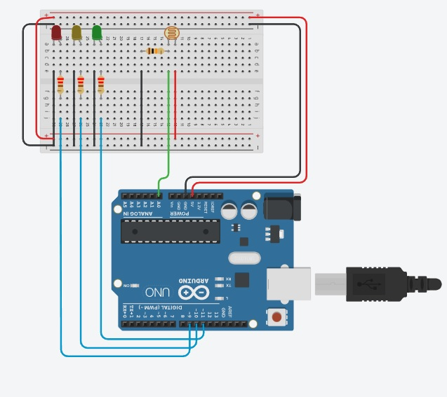

Foto LDR com a montágem física no ARDUÍNO

print de tela de um exemplo de código C++ no IDE ARDUÌNO

Filmagem do controle de iluminação
foto das medidas realizadas com o multímetro

Explicação: as medidas oscilam porcausa da alteração da luz
Print de tela da ligação do LDR e LEDs
